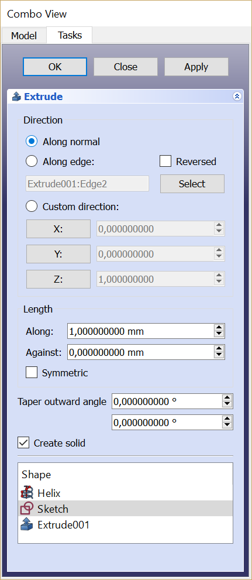

Part Extrude/cs
|
Part Vysunutí |
| Umístění Menu |
|---|
| Part → Vysunutí |
| Pracovní stoly |
| Part |
| Výchozí zástupce |
| Nikdo |
| Představen ve verzi |
| - |
| Viz také |
| Draft Trimex, PartDesign Deska |
Popis
Příkaz  Part Vysunutí prodlouží tvar o zadanou vzdálenost v zadaném směru. Typ výsledného tvaru se bude lišit v závislosti na typu vstupního tvaru a zvolených možnostech.
Part Vysunutí prodlouží tvar o zadanou vzdálenost v zadaném směru. Typ výsledného tvaru se bude lišit v závislosti na typu vstupního tvaru a zvolených možnostech.
V nejběžnějších případech je níže uveden typ očekávaného výstupního tvaru pro daný typ vstupního tvaru,
- Extrudováním vrcholu (bodu) vznikne přímá hrana (čára)
- Extrudováním otevřené hrany (např. čáry, oblouku) vznikne otevřená plocha (např. rovina)
- Extrudování uzavřené hrany (např. kružnice) vytvoří volitelně uzavřenou plochu (např. válec s otevřenými konci) nebo, pokud je parametr „solid“ nastaven na „true“, vytvoří těleso (např. uzavřený válec)
- Extrudování otevřeného drátu (např. drátu pro nákres) vytvoří otevřenou skořepinu (několik spojených ploch)
- Extrudováním uzavřené drátové křivky (např. návrhové drátové křivky) vznikne volitelně plášť (několik spojených ploch) nebo, pokud je parametr "solid" nastaven na "true", vznikne těleso
- Extrudováním plochy (např. roviny) vznikne těleso (např. kvádr)
- Extrudování
 Draft Tvar z textu vytvoří složeninu těles (řetězec je složeninou písmen, z nichž každé je těleso)
Draft Tvar z textu vytvoří složeninu těles (řetězec je složeninou písmen, z nichž každé je těleso) - Extrudování pláště z ploch vytvoří Compsolid.
{kind=link}
Příklady vytažení
Použití
- Volitelně vyberte jeden nebo více objektů ve 3D pohledu nebo ve stromovém zobrazení.
- Příkaz lze spustit několika způsoby:
- Stiskněte tlačítko
 Vysunutí.
Vysunutí. - Z menu vyberte možnost Part → Vysunutí.
- Stiskněte tlačítko
- Otevře se panel úloh ‚‘'Extrude'‚‘.
- Volitelně klikněte na položku v seznamu ‚‘'Shape'‚‘ pro (opětovný) výběr tvaru.
- Případně podržte stisknutou klávesu Shift a klikněte na položku v seznamu Tvar, abyste tvar přidali do výběru nebo z něj odstranili.
- Nastavte směr a délku a případně další parametry (další podrobnosti najdete v sekci Vlastnosti).
- Stisknutím tlačítka OK zavřete panel úloh.
- Pro každý vybraný tvar se vytvoří jeden objekt typu Extrude.
Každý vstupní tvar je umístěn pod příslušným objektem Extrude.
Task panel
{kind=link}

- OK button creates the extrusion, and closes the panel.
- Close button closes the panel, without doing anything.
- Apply button creates the extrusion, but does not close the panel. You can then select another shape from the list at the bottom and create more extrusions.
- Direction radio buttons: sets the way the extrusion direction is computed.
- Reversed checkbox: reverses the extrusion direction.
- Select button: click it, and then pick an edge in the 3D View. That edge will appear in text field next to the button, in the format "ObjectName:EdgeN". You can also type the link manually or erase it. The values X, Y, Z will be filled according to the edge direction.
- X, Y, Z buttons: Click a button to set extrusion direction to the positive axis. Click it again to set it to the negative axis.
- X, Y, Z input fields: set or display the direction vector of extrusion. If both lengths are zero, the length of this vector sets the length of extrusion, and values are always in mm, regardless of unit preferences.
- Length fields: set the length of the extrusion. These input fields have unit support.
- Symmetric: spreads out the extrusion into both directions, so that the profile remains in the middle.
- Taper angle along: draft angle for the along direction. Positive angle means profile is expanded at other end of extrusion.
- Taper angle against: idem for the against direction.
- Create solid checkbox: if checked, extruding a closed wire or edge will yield a solid. It is checked by default, if a closed wire was preselected before invoking Part Extrude.
- Shape list: here you select which shapes to extrude. If multiple objects are selected, multiple Extrude objects are created.
Notes
- The task panel does not offer a preview, yet. Apply will create an extrusion object every time you click it, which can be useful as preview; however, they will remain and yet another one will be created as you click OK. Undo can be useful to clean them up before clicking OK.
Comparison with PartDesign Pad
PartDesign Pad is also an extrusion feature, but there are important differences:
- Part Extrude always creates a standalone shape. PartDesign Pad fuses the extrusion result to the rest of the Body.
- Part Extrude can be placed anywhere in the model tree. PartDesign Pad can only be placed inside a PartDesign Body.
- Part Extrude can extrude any object that has a Part geometry (OpenCASCADE shape), except for solids and CompSolids.
- Part Extrude can extrude individual faces of other objects. PartDesign Pad will only accept either Sketch or faces of PartDesign objects as a profile.
Properties
See also: Property View.
A Part Extude object is derived from a Part Feature object and inherits all its properties. It also has the following additional properties:
Data
Extrude
- ÚdajeBase (
Link): The shape to extrude. - ÚdajeDir (
Vector): The extrusion direction. If ÚdajeDir Mode isCustomyou can edit this property, otherwise it is read-only. - ÚdajeDir Mode (
Enumeration): Sets how ÚdajeDir is controlled.Custommeans ÚdajeDir is editable.Edgemeans ÚdajeDir is obtained from an edge (line) linked by ÚdajeDir Link.Normalmeans ÚdajeDir is perpendicular to the plane of the input shape. - ÚdajeDir Link (
LinkSub): Parametric link to an edge (line) that sets the extrusion direction. - ÚdajeLength Fwd (
Distance): Length of extrusion along direction. If both ÚdajeLength Fwd and ÚdajeLength Rev are zero, the length of the ÚdajeDir vector is used. - ÚdajeLength Rev (
Distance): Length of additional extrusion, against direction. - ÚdajeSolid (
Bool): If true, extruding a closed edge or a closed wire will yield a solid. If False, a shell will result. - ÚdajeReversed (
Bool): Reverses the extrusion direction. - ÚdajeSymmetric (
Bool): If true, extrusion is centered at the input shape, and the total length is ÚdajeLength Fwd. ÚdajeLength Rev is ignored. - ÚdajeTaper Angle (
Angle): Applies an angle to the extrusion, so that sides of the extrusion are drafted by the specified angle. Positive angle means the cross-section expands. Inner structures receive the opposite taper angle. This is done to facilitate the design of molds and molded parts. - ÚdajeTaper Angle Rev (
Angle): Sets the taper for the reversed part of the extrusion (the part from ÚdajeLength Rev). - Údaje (Hidden)Face Maker Class (
String): Superseded by ÚdajeFace Make Mode (read-only). - ÚdajeFace Make Mode (
Enumeration): If ÚdajeSolid is true, the facemaker class to use when converting wires to faces, otherwise ignored. The options areSimple,Cheese,ExtrusionandBullseye(default).
- Creation and modification: New Sketch, Extrude, Revolve, Mirror, Scale, Fillet, Chamfer, Face From Wires, Ruled Surface, Loft, Sweep, Section, Cross-Sections, 3D Offset, 2D Offset, Thickness, Project on Surface, Appearance per Face
- Boolean: Compound, Explode Compound, Compound Filter, Boolean Operation, Cut, Union, Intersection, Connect Shapes, Embed Shapes, Cutout Shape, Boolean Fragments, Slice Apart, Slice to Compound, Boolean XOR, Check Geometry, Defeaturing
- Other tools: Box Selection, Shape From Mesh, Points From Shape, Convert to Solid, Reverse Shapes, Simple Copy, Transformed Copy, Shape Element Copy, Refine Shape, Set Tolerance, Persistent Section Cut, Attachment
- Preferences: Preferences, Fine tuning
- Getting started
- Installation: Download, Windows, Linux, Mac, Additional components, Docker, AppImage, Ubuntu Snap
- Basics: About FreeCAD, Interface, Mouse navigation, Selection methods, Object name, Preferences, Workbenches, Document structure, Properties, Help FreeCAD, Donate
- Help: Tutorials, Video tutorials
- Workbenches: Std Base, Assembly, BIM, CAM, Draft, FEM, Inspection, Material, Mesh, OpenSCAD, Part, PartDesign, Points, Reverse Engineering, Robot, Sketcher, Spreadsheet, Surface, TechDraw, Test Framework
- Hubs: User hub, Power users hub, Developer hub